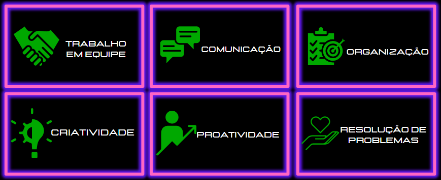
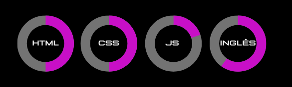

< Habilidades >

< Formação >
ANÁLISE E DESENVOLVIMENTO DE SISTEMAS
UNICESUMAR | 2022 - 2025
DESENVOLVIMENTO WEB FRONT END
ALURA | 2022 - 2023
UX/UI DESIGN
COURSERA + GOOGLE | 2023 - 2023
< Experiências >
SOLACE ASSESSORIA DE CRÉDITO | BACKOFFICE
• Digitação de propostas nos bancos Olé, Itaú, BMG, Panamericano, Daycoval, entre outros;
• Acompanhamento diário dos contratos e atualização de planilhas;
• Controle de atrasos e casos de urgência;
• Suporte à computadores e sistemas utilizados;
• Acompanhamento de ligações, produtividade e realização de feedbacks;
• Desenvolvimento e aplicação de treinamentos;
• Criação de maillings de acordo com as demandas e tendências de mercado;
• Criação de posts para Facebook, Instagram e movimentação via WhatsApp para recuperação de prospects;
• Edição de fotos, texto, criação de flyers e conteúdo para redes sociais;
PLUSOFT INFORMÁTICA | ANALISTA DE MÍDIAS SOCIAIS
• Atendimento ao consumidor via Twitter, Facebook e Instagram;
• Interações de 1°, 2° nível e tagueamento;
• Qualidade, personalização e humanização do contato;
• Agilidade e eficácia no cumprimento de metas diárias e mensais.
< Meu desenvolvimento >
